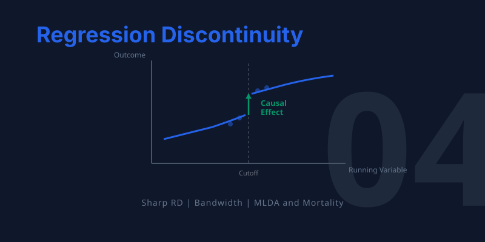
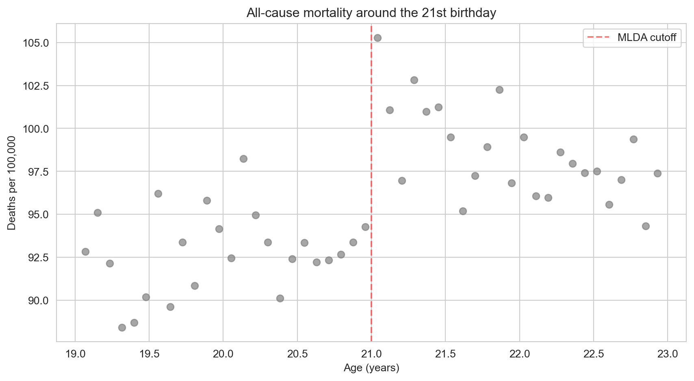
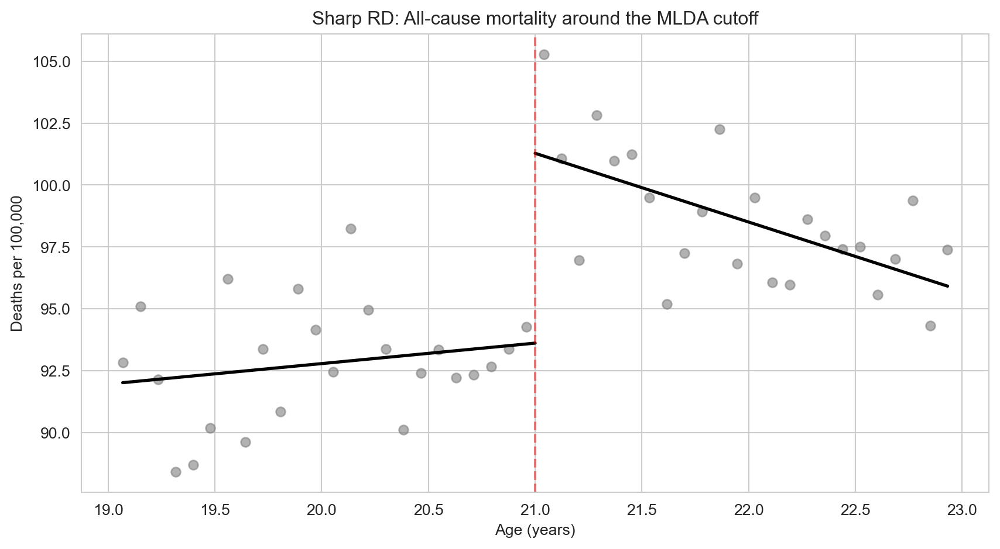
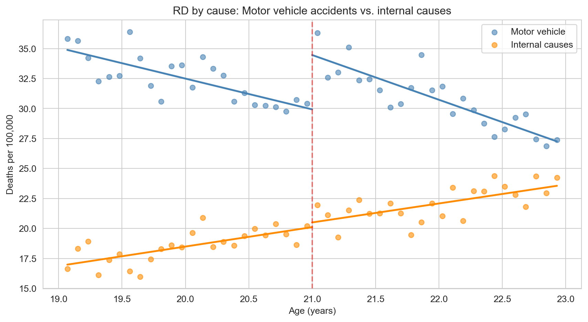
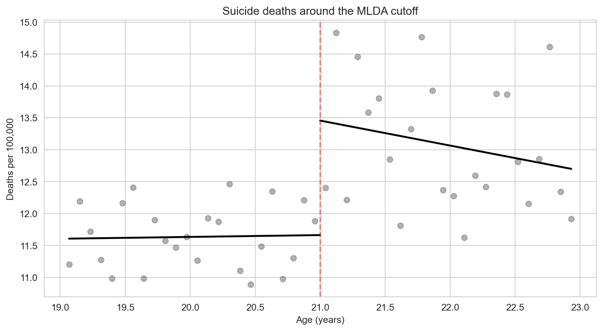

graph TD
A["THE QUESTION: Does legal drinking access increase mortality?"]
B["THE INSIGHT: The age-21 cutoff creates a natural experiment"]
C["THE METHOD: Compare outcomes just above vs. just below the cutoff"]
D["THE EVIDENCE: Sharp mortality jump at age 21, driven by car accidents"]
E["THE EXTENSION: Fuzzy RD when treatment probability jumps at a cutoff"]
A --> B --> C --> D --> E
style A fill:#3498db,color:#fff
style B fill:#e67e22,color:#fff
style C fill:#8e44ad,color:#fff
style D fill:#2d8659,color:#fff
style E fill:#475569,color:#fff
linkStyle default stroke:#64748b,stroke-width:2px
4. Regression Discontinuity Designs


TipLearning Objectives
By the end of this chapter, you will be able to:
- Explain how rigid rules and cutoffs create natural experiments
- Define the running variable, cutoff, and treatment indicator in an RD design
- Distinguish between sharp and fuzzy RD designs
- Estimate causal effects using polynomial regression at a discontinuity
- Assess robustness through bandwidth choice and specification checks
- Interpret the RD estimate as a local causal effect at the cutoff
This chapter shows how bureaucratic rules — the very things that seem to reduce randomness — can actually create valuable natural experiments for causal inference.
Key Concepts and Definitions
Regression Discontinuity (RD) Design: A quasi-experimental method that exploits a sharp cutoff in a continuous variable to estimate causal effects. People just above and below the cutoff are nearly identical, but only one group receives treatment.
TipExample
The minimum legal drinking age of 21 creates a cutoff: people aged 20.9 years are nearly identical to those aged 21.1, but only the older group can legally buy alcohol.
NoteAnalogy
Like a finish line in a race. The runner who finishes at 9.99 seconds and the one at 10.01 seconds are virtually the same in ability, but only one gets a medal. The medal is the “treatment” assigned by the cutoff.
Running Variable: The continuous variable that determines treatment based on its position relative to the cutoff. It “runs” from below the threshold to above it.
TipExample
In the MLDA study, age (in months) is the running variable. The outcome (mortality) depends on where a person’s age falls relative to the 21-year cutoff.
NoteAnalogy
Like a thermometer measuring temperature. The reading (running variable) determines whether a thermostat turns the heater on (treatment): above a set point, the heater is off; below it, the heater kicks in.
Cutoff (Threshold): The specific value of the running variable where treatment switches on or off. The causal effect is estimated as the discontinuous jump in the outcome at this point.
TipExample
Age 21 is the cutoff for legal drinking. Score 70 might be the cutoff for passing an exam. 65 is the cutoff for Medicare eligibility.
NoteAnalogy
Like a border between two countries. One step to the left, you are in Country A with its laws. One step to the right, you are in Country B with different rules. The border itself is the cutoff.
Sharp RD: An RD design where treatment switches completely on or off at the cutoff. Everyone above the threshold is treated; everyone below is not.
TipExample
At age 21, legal drinking access switches from 0% to 100%. There are no exceptions — it is a sharp, deterministic rule.
NoteAnalogy
Like a light switch. It is either fully on or fully off at the threshold — there is no dimmer.
Fuzzy RD: An RD design where the probability of treatment jumps at the cutoff but does not go from 0 to 100%. Some people above the cutoff are untreated, and some below are treated. Fuzzy RD uses the cutoff as an instrument for treatment (combining RD with IV).
TipExample
Scoring above the admissions cutoff for Boston Latin School increases the probability of enrollment but does not guarantee it — some students decline admission.
NoteAnalogy
Like a dimmer switch rather than an on/off switch. Crossing the threshold makes treatment much more likely, but it does not guarantee it.
Natural Experiment: A situation where some external event, policy, or institutional rule creates variation in treatment that is “as good as random” for the people affected, even though no researcher designed the experiment.
TipExample
The Oregon Medicaid lottery, where limited slots were allocated randomly among applicants, created a natural experiment for studying health insurance effects.
NoteAnalogy
Like a snowstorm canceling some flights but not others. The storm was not designed as an experiment, but it randomly splits travelers into those who fly and those who are stuck, allowing you to study the effects of arriving on time.
Polynomial Regression (in RD): A regression that fits a curve (linear, quadratic, or higher-order) to the relationship between the running variable and the outcome on each side of the cutoff, allowing the researcher to control for the smooth trend and isolate the jump.
TipExample
A linear fit assumes mortality changes at a constant rate with age. A quadratic fit allows the rate of change itself to vary. The RD estimate is the gap between the two curves at the cutoff.
NoteAnalogy
Like fitting a flexible ruler to a curved surface. A straight ruler (linear) may miss the curve; a bendable ruler (quadratic) follows it more closely. Either way, the jump at the cutoff is what matters.
Bandwidth: The range of the running variable around the cutoff used in the analysis. A narrow bandwidth includes only observations close to the cutoff (more comparable, less data); a wide bandwidth includes more data but risks bias from the functional form.
TipExample
Analyzing mortality for ages 20–22 (narrow) versus 19–23 (wide). The narrow window has fewer observations but more comparable people.
NoteAnalogy
Like zooming in on a photograph. A close-up (narrow bandwidth) shows fine detail around the cutoff but captures less of the broader picture. A wide shot includes more context but may blur the key feature.
Specification Check: A robustness test in RD that varies the polynomial order, bandwidth, or other modeling choices to see whether the estimated jump at the cutoff remains stable.
TipExample
Checking that the MLDA mortality jump is similar whether you fit a linear or quadratic model, and whether you use ages 20–22 or 19–23.
NoteAnalogy
Like reading a message through different pairs of glasses. If you see the same message every time, it is probably real. If the message changes with each pair, you cannot trust any single reading.
Placebo Test: A test that checks for a discontinuity in an outcome that should not be affected by the treatment. A significant jump in a placebo outcome suggests the research design may be flawed.
TipExample
Testing whether internal causes of death (cancer, heart disease) jump at age 21. They should not, because diseases do not respond to a birthday. Finding no jump validates the RD design.
NoteAnalogy
Like testing whether a new medicine affects hair color. If it does, something is wrong with the experiment — a real drug should only affect the targeted condition.
Local Causal Effect: An RD estimate that applies only to individuals near the cutoff, not to the broader population. People far from the cutoff may respond differently to treatment.
TipExample
The MLDA RD estimates the mortality effect of legal drinking for people right around age 21. The effect might be different for 16-year-olds or 30-year-olds.
NoteAnalogy
Like measuring the depth of a lake at the shoreline. The water is shallow near the edge (the cutoff), but the lake may be much deeper farther out. The shore measurement is accurate locally but may not generalize.
Continuity Assumption: The assumption that, in the absence of treatment, the outcome would change smoothly through the cutoff — there would be no jump. Any observed jump must therefore be caused by the treatment.
TipExample
Without legal access to alcohol, mortality should change smoothly with age near 21. Any sudden spike at the cutoff is attributed to the drinking age policy.
NoteAnalogy
Like driving on a smooth road. If you suddenly hit a speed bump (the jump), you know something was placed there (the treatment). Without the bump, the road would have continued smoothly.
Attenuation Bias: Bias toward zero caused by imprecise measurement of a variable. Measurement error adds noise that dilutes the estimated relationship, making the true effect appear smaller than it is.
TipExample
If self-reported years of education contain random errors, the estimated return to schooling will be biased toward zero because the noise obscures the true signal.
NoteAnalogy
Like listening to a radio with static. The song (true signal) is still playing, but the static (noise) makes it sound quieter and less distinct than it really is.
Rules Create Experiments
Many policies have sharp eligibility rules. You can vote at 18 but not at 17. You qualify for Medicare at 65 but not at 64. You can legally drink at 21 but not at 20. These cutoffs create a powerful opportunity: people just above and just below the threshold are nearly identical in every way — except that one group receives the treatment and the other doesn’t.
This is the logic of Regression Discontinuity (RD) designs. The causal effect is identified by the jump in outcomes at the cutoff.
NoteIntuition Builder: The Speed Limit Analogy
Think of a speed limit sign on a highway. The road is the same on both sides of the sign — same surface, same weather, same cars. But drivers caught going 66 mph vs. 64 mph face very different consequences if the limit is 65. The sign creates a sharp rule that affects behavior, even though the drivers on both sides are virtually identical. RD exploits exactly this kind of rule: people just above and just below a threshold are nearly interchangeable, but the rule treats them differently.
The MLDA Question
The minimum legal drinking age (MLDA) is 21 in the United States. Does reaching this threshold actually affect health? Specifically, does turning 21 — and gaining legal access to alcohol — increase mortality?
Code
import pandas as pd
import numpy as np
import statsmodels.formula.api as smf
import matplotlib.pyplot as plt
import seaborn as sns
sns.set_style("whitegrid")
# Load clean MLDA mortality data
# Each row is one monthly age cell with death rates per 100,000
# Key variables:
# agecell = age in years (e.g., 19.08, 20.17, 21.00, ...)
# age = centered at 21 (so age=0 is the cutoff; negative = under 21)
# over21 = treatment dummy (1 if age >= 21, 0 otherwise)
# age2, over_age, over_age2 = polynomial/interaction terms for flexible RD models
# all, mva, suicide, homicide, internal, alcohol = death rates by cause
# --- Data source ---
DATA = "https://raw.githubusercontent.com/cmg777/intro2causal/main/data/"
mlda = pd.read_csv(DATA + "ch4/mlda_clean.csv")
mlda.head(3)| agecell | age | over21 | all | mva | suicide | homicide | internal | alcohol | ext_oth | age2 | over_age | over_age2 | |
|---|---|---|---|---|---|---|---|---|---|---|---|---|---|
| 0 | 19.068493 | -1.931507 | 0 | 92.825400 | 35.829327 | 11.203714 | 16.316818 | 16.617590 | 0.639138 | 12.857960 | 3.730720 | -0.0 | 0.0 |
| 1 | 19.150684 | -1.849316 | 0 | 95.100740 | 35.639256 | 12.193368 | 16.859964 | 18.327684 | 0.677409 | 12.080471 | 3.419968 | -0.0 | 0.0 |
| 2 | 19.232876 | -1.767124 | 0 | 92.144295 | 34.205650 | 11.715812 | 15.219254 | 18.911053 | 0.866443 | 12.092522 | 3.122728 | -0.0 | 0.0 |
Visualizing the Discontinuity
The first step in any RD analysis is to plot the data. If the causal effect is real, we should see a visible jump in mortality at age 21.
Code
# Scatter plot: mortality rate vs. age in months
fig, ax = plt.subplots(figsize=(9, 5))
ax.scatter(mlda["agecell"], mlda["all"], color="gray", alpha=0.7, s=40) # one dot per age cell
ax.axvline(x=21, color="red", linestyle="--", alpha=0.5, label="MLDA cutoff") # mark the cutoff
ax.set_xlabel("Age (years)")
ax.set_ylabel("Deaths per 100,000")
ax.set_title("All-cause mortality around the 21st birthday")
ax.legend()
plt.tight_layout()
plt.show()
There is a visible jump right at age 21. Let’s now estimate its size formally.
WarningCommon Misconception: RD is not just “controlling for” the running variable
In standard regression (Chapter 2), we control for confounders to make treated and untreated groups comparable. RD is fundamentally different: there is no value of the running variable where we observe both treated and untreated individuals. Everyone over 21 is treated; everyone under 21 is untreated. Instead, RD extrapolates the trend from one side of the cutoff to estimate what would have happened without the jump. This is why the functional form (linear vs. quadratic) matters — it determines how we extrapolate.
With that distinction in mind, let’s build the regression model that formalizes the RD approach.
The Sharp RD Regression
What Is a Running Variable?
In an RD design, the running variable is the variable that determines treatment. Here, age is the running variable and 21 is the cutoff. The treatment — legal access to alcohol — switches on deterministically at the cutoff:
\[D_a = \begin{cases} 1 & \text{if } a \geq 21 \\ 0 & \text{if } a < 21 \end{cases}\]
where \(a\) is age (the running variable) and \(D_a\) is the treatment indicator. In our data, these correspond to the columns agecell and over21.
This is a sharp RD: treatment switches completely on at the cutoff, with no exceptions.
NoteHow RD regression works
We regress the outcome \(M_a\) (mortality rate at age \(a\)) on the treatment dummy \(D_a\) and a smooth function of the running variable:
\[M_a = \alpha + \rho \, D_a + \gamma \, a + e_a\]
- Intercept (\(\alpha\)) = predicted mortality just below the cutoff
- \(\rho\) = the jump at the cutoff — this is the causal effect we want
- \(\gamma\) = the background age trend (mortality naturally changes with age)
In Python, this is: smf.ols("all ~ over21 + age", data=mlda) — where all is \(M_a\), over21 is \(D_a\), and age is \(a\).
The key insight: because age varies smoothly, any sudden jump at the cutoff must be caused by the treatment.
Code
# Simple linear RD regression
model = smf.ols("all ~ over21 + age", data=mlda)
result = model.fit(cov_type="HC1")
# Extract key regression results into a clear table
pd.DataFrame({
"Variable": result.params.index,
"Coefficient": result.params.round(4).values,
"Std. Error": result.bse.round(4).values,
"t-statistic": result.tvalues.round(2).values,
"p-value": result.pvalues.round(3).values,
})| Variable | Coefficient | Std. Error | t-statistic | p-value | |
|---|---|---|---|---|---|
| 0 | Intercept | 91.8414 | 0.7090 | 129.53 | 0.000 |
| 1 | over21 | 7.6627 | 1.5142 | 5.06 | 0.000 |
| 2 | age | -0.9747 | 0.6639 | -1.47 | 0.142 |
The coefficient on over21 is approximately 7.7 deaths per 100,000 — a substantial increase caused by gaining legal access to alcohol.
Robustness: Does the Specification Matter?
A critical question in RD is whether the estimated jump depends on how we model the age trend. We test robustness in two ways:
- Polynomial order: linear vs. quadratic trends
- Bandwidth: full sample (ages 19–22) vs. narrow window (ages 20–22)
Code
# Define narrow bandwidth subsample (ages 20-22 only)
narrow = mlda[(mlda["agecell"] >= 20) & (mlda["agecell"] <= 22)]
# Outcomes to test: each cause of death
outcomes = {"all": "All causes", "mva": "Motor vehicle", "suicide": "Suicide",
"internal": "Internal causes", "alcohol": "Alcohol-related"}
# For each cause of death, run 4 RD specifications:
# 1. Linear trend, full sample (ages 19-22)
# 2. Quadratic trend, full sample
# 3. Linear trend, narrow bandwidth (ages 20-22)
# 4. Quadratic trend, narrow bandwidth
# This tests whether the RD estimate is robust to model choice and sample window.
rows = []
for var, label in outcomes.items():
specs = []
# Spec 1: Linear, full sample
model1 = smf.ols(f"{var} ~ over21 + age", data=mlda)
r1 = model1.fit(cov_type="HC1")
coef1 = round(r1.params["over21"], 2)
se1 = round(r1.bse["over21"], 2)
specs.append(format(coef1, ".2f") + " (" + format(se1, ".2f") + ")")
# Spec 2: Quadratic, full sample
model2 = smf.ols(f"{var} ~ over21 + age + age2 + over_age + over_age2",
data=mlda)
r2 = model2.fit(cov_type="HC1")
coef2 = round(r2.params["over21"], 2)
se2 = round(r2.bse["over21"], 2)
specs.append(format(coef2, ".2f") + " (" + format(se2, ".2f") + ")")
# Spec 3: Linear, narrow bandwidth
model3 = smf.ols(f"{var} ~ over21 + age", data=narrow)
r3 = model3.fit(cov_type="HC1")
coef3 = round(r3.params["over21"], 2)
se3 = round(r3.bse["over21"], 2)
specs.append(format(coef3, ".2f") + " (" + format(se3, ".2f") + ")")
# Spec 4: Quadratic, narrow bandwidth
model4 = smf.ols(f"{var} ~ over21 + age + age2 + over_age + over_age2",
data=narrow)
r4 = model4.fit(cov_type="HC1")
coef4 = round(r4.params["over21"], 2)
se4 = round(r4.bse["over21"], 2)
specs.append(format(coef4, ".2f") + " (" + format(se4, ".2f") + ")")
rows.append({"Cause of death": label, "Linear (full)": specs[0],
"Quadratic (full)": specs[1], "Linear (narrow)": specs[2],
"Quadratic (narrow)": specs[3]})
pd.DataFrame(rows)| Cause of death | Linear (full) | Quadratic (full) | Linear (narrow) | Quadratic (narrow) | |
|---|---|---|---|---|---|
| 0 | All causes | 7.66 (1.51) | 9.55 (1.83) | 9.75 (2.06) | 9.61 (2.29) |
| 1 | Motor vehicle | 4.53 (0.72) | 4.66 (1.09) | 4.76 (1.08) | 5.89 (1.33) |
| 2 | Suicide | 1.79 (0.50) | 1.81 (0.78) | 1.72 (0.73) | 1.30 (1.14) |
| 3 | Internal causes | 0.39 (0.54) | 1.07 (0.80) | 1.69 (0.74) | 1.25 (1.01) |
| 4 | Alcohol-related | 0.44 (0.21) | 0.80 (0.32) | 0.74 (0.33) | 1.03 (0.41) |
ImportantKey findings
- All-cause mortality: jumps by 7–10 deaths per 100,000 across all specifications
- Motor vehicle accidents: the primary driver (4–6 extra deaths) — drunk driving is the main mechanism
- Internal causes: no significant jump — this is a placebo test. Diseases shouldn’t respond to the drinking age, and they don’t. This validates the RD design.
- Results are robust: similar across linear/quadratic models and bandwidth choices
Why is the internal causes placebo so powerful? Diseases like cancer, heart disease, and diabetes take years or decades to develop. There is no biological reason why crossing the age-21 threshold would suddenly cause internal organ failure. So if we found a jump in internal-cause deaths, something else must be changing at 21 (perhaps data reporting practices or insurance eligibility), and we couldn’t trust the MVA result either. Finding no jump in this placebo outcome gives us confidence that the design is working as intended.
Visualizing the RD with Fitted Lines
Code
# Split data at the cutoff
below = mlda[mlda["age"] < 0] # under 21
above = mlda[mlda["age"] >= 0] # 21 and over
# Fit separate linear regressions on each side
fit_below = smf.ols("all ~ age", data=below).fit()
fit_above = smf.ols("all ~ age", data=above).fit()
# Plot scatter + fitted lines
fig, ax = plt.subplots(figsize=(9, 5))
ax.scatter(mlda["agecell"], mlda["all"], color="gray", alpha=0.6, s=35)
ax.plot(below["agecell"], fit_below.predict(below), "k-", linewidth=2) # left line
ax.plot(above["agecell"], fit_above.predict(above), "k-", linewidth=2) # right line
ax.axvline(x=21, color="red", linestyle="--", alpha=0.5)
ax.set_xlabel("Age (years)")
ax.set_ylabel("Deaths per 100,000")
ax.set_title("Sharp RD: All-cause mortality around the MLDA cutoff")
plt.tight_layout()
plt.show()
The gap between the two fitted lines at age 21 is the RD estimate — approximately 7–10 extra deaths per 100,000 caused by legal access to alcohol. Notice how the lines fit the data well on each side of the cutoff, with a clear discontinuous jump right at the threshold.
But what is driving this jump? Is it drunk driving, suicide, or something else entirely? The next figure breaks down mortality by cause to answer this question.
Code
# Plot two causes on the same figure: MVA (should jump) vs internal (should not)
fig, ax = plt.subplots(figsize=(9, 5))
ax.scatter(mlda["agecell"], mlda["mva"], color="steelblue", alpha=0.6, s=30, label="Motor vehicle")
ax.scatter(mlda["agecell"], mlda["internal"], color="darkorange", alpha=0.6, s=30, label="Internal causes")
# Fit separate regression lines on each side of the cutoff, for each cause of death.
# The outer loop picks the death cause; the inner loop picks below-21 vs. above-21.
for var, color in [("mva", "steelblue"), ("internal", "darkorange")]:
for subset in [below, above]:
model = smf.ols(f"{var} ~ age", data=subset)
fit = model.fit()
ax.plot(subset["agecell"], fit.predict(subset), color=color, linewidth=2)
ax.axvline(x=21, color="red", linestyle="--", alpha=0.5) # cutoff line
ax.set_xlabel("Age (years)")
ax.set_ylabel("Deaths per 100,000")
ax.set_title("RD by cause: Motor vehicle accidents vs. internal causes")
ax.legend()
plt.tight_layout()
plt.show()
The figure makes the story clear. Motor vehicle deaths (blue) show a sharp upward jump at age 21 — consistent with drunk driving as the primary mechanism. Internal causes of death (orange) show no discontinuity at the cutoff, exactly as expected: diseases like cancer and heart disease do not respond to a birthday. This placebo outcome validates the RD design.
Historical Perspective: Donald Campbell
The RD design was invented by Donald Thistlethwaite and Donald Campbell in 1960. They studied whether receiving National Merit Scholarship recognition affected students’ career plans. Their RD analysis at the recognition cutoff found minimal effects — one of the first applications of this now-ubiquitous method.
Campbell went on to pioneer quasi-experimental methods more broadly, co-authoring influential textbooks on research design that shaped how social scientists think about causal inference outside of true experiments.
Key Takeaways
The following concept map shows how the key ideas in this chapter connect — from cutoff rules that create natural experiments, through the RD method of comparing observations just above and below the threshold, to robustness checks, placebo tests, and the fuzzy RD extension.
graph TD
Q["Rigid rules create sharp cutoffs"]
RV["Running variable determines treatment"]
RD["RD: compare just above vs. just below"]
SPEC["Test robustness: polynomial order and bandwidth"]
PLAC["Placebo test: outcomes that should not jump"]
LOCAL["RD estimates are local: valid at the cutoff"]
FUZZY["Fuzzy RD: when treatment probability jumps, use IV"]
Q --> RV --> RD
RD --> SPEC
RD --> PLAC
RD --> LOCAL
RD --> FUZZY
style Q fill:#3498db,color:#fff
style RV fill:#475569,color:#fff
style RD fill:#8e44ad,color:#fff
style SPEC fill:#e67e22,color:#fff
style PLAC fill:#2d8659,color:#fff
style LOCAL fill:#475569,color:#fff
style FUZZY fill:#e67e22,color:#fff
linkStyle default stroke:#64748b,stroke-width:2px
RD exploits cutoff rules where treatment switches on at a threshold of a running variable.
The causal effect is the jump in outcomes at the cutoff, after controlling for the smooth relationship between the running variable and the outcome.
Always plot the data first. Visual inspection is the most important step in RD.
Test robustness by varying polynomial order (linear vs. quadratic) and bandwidth (wide vs. narrow).
Placebo tests on outcomes unaffected by treatment (e.g., internal causes of death) validate the design.
RD estimates are local — they apply to people near the cutoff and may not generalize to people far from it.
Fuzzy RD handles cases where treatment probability (not treatment itself) jumps, using IV at the cutoff.
Learn by Coding
Copy this code into a Python notebook to reproduce the key results from this chapter.
# ============================================================
# Chapter 4: Regression Discontinuity — Code Cheatsheet
# ============================================================
import pandas as pd
import matplotlib.pyplot as plt
import statsmodels.formula.api as smf
DATA = "https://raw.githubusercontent.com/cmg777/intro2causal/main/data/"
# --- Step 1: Load MLDA mortality data ---
mlda = pd.read_csv(DATA + "ch4/mlda_clean.csv")
print("MLDA data:", mlda.shape[0], "age cells")
print(mlda[["agecell", "over21", "all", "mva", "internal"]].head())
# --- Step 2: Plot the discontinuity ---
fig, ax = plt.subplots(figsize=(8, 5))
ax.scatter(mlda["agecell"], mlda["all"], color="gray", alpha=0.7, s=40)
ax.axvline(x=21, color="red", linestyle="--", label="MLDA cutoff (age 21)")
ax.set_xlabel("Age")
ax.set_ylabel("Deaths per 100,000")
ax.set_title("All-cause mortality around the MLDA cutoff")
ax.legend()
plt.show()
# --- Step 3: Sharp RD regression (linear) ---
model = smf.ols("all ~ over21 + age", data=mlda)
result = model.fit(cov_type="HC1")
print("\nSharp RD — linear specification:")
print(result.summary().tables[1])
print(f" Jump at cutoff: {round(result.params['over21'], 2)} deaths per 100k")
# --- Step 4: Quadratic RD for robustness ---
model = smf.ols("all ~ over21 + age + age2 + over_age + over_age2", data=mlda)
result = model.fit(cov_type="HC1")
print("\nSharp RD — quadratic specification:")
print(f" Jump at cutoff: {round(result.params['over21'], 2)} deaths per 100k")
# --- Step 5: Placebo test (internal causes should NOT jump) ---
model = smf.ols("internal ~ over21 + age", data=mlda)
result = model.fit(cov_type="HC1")
print(f"\nPlacebo test (internal causes): {round(result.params['over21'], 2)}")
print(" (Expect: small and insignificant — diseases don't respond to MLDA)")
TipTry it yourself!
Copy the code above and paste it into this Google Colab scratchpad to run it interactively. Modify the variables, change the specifications, and see how results change!
Below is the same cheatsheet in Stata syntax.
* ============================================================
* Chapter 4: Regression Discontinuity — Stata Cheatsheet
* ============================================================
clear all
set more off
* --- Step 1: Load MLDA mortality data ---
import delimited using "https://raw.githubusercontent.com/cmg777/intro2causal/main/data/ch4/mlda_clean.csv", clear
list agecell over21 all mva internal in 1/5
* --- Step 2: Plot the discontinuity ---
twoway (scatter all agecell, mcolor(gray)), ///
xline(21, lcolor(red) lpattern(dash)) ///
xtitle("Age") ytitle("Deaths per 100,000") ///
title("All-cause mortality around the MLDA cutoff")
* --- Step 3: Sharp RD regression (linear) ---
reg all over21 age, robust
* --- Step 4: Quadratic RD for robustness ---
reg all over21 age age2 over_age over_age2, robust
* --- Step 5: Placebo test (internal causes should NOT jump) ---
reg internal over21 age, robust
* Expect: small and insignificant coefficient on over21
TipTry it in Stata!
Copy the code above into a .do file and run it in Stata 14 or later (which supports loading data from URLs). If your Stata cannot access the internet, download the CSV files from the data/ folder on GitHub and replace each URL with a local file path.
Exercises
Multiple Choice Questions
- What makes a regression discontinuity design possible?
- Random assignment of treatment to participants
- A rigid rule or cutoff that determines treatment eligibility
- A large sample size with many treated individuals
- The availability of panel data over multiple time periods
NoteShow answer
(b) RD exploits rigid rules — such as age thresholds, test score cutoffs, or income limits — that create sharp changes in treatment eligibility. People just above and just below the cutoff are nearly identical, creating a natural experiment. (a) is wrong because random assignment of treatment describes randomized controlled trials (RCTs), not RD — RD is observational, with treatment determined by a cutoff rule. (c) is wrong because while matching on observables can help, it is not what defines RD; RD specifically relies on a known cutoff in a running variable. (d) is wrong because before-after comparisons describe difference-in-differences, not RD.
- In a sharp RD design, the “running variable” is:
- The outcome variable that we want to measure
- The variable that determines treatment status through a cutoff
- A control variable included to reduce bias
- The time variable in a panel dataset
NoteShow answer
(b) The running variable is the continuous variable (like age) that determines whether someone is above or below the cutoff. In the MLDA example, age is the running variable and 21 is the cutoff. (a) is wrong because the death rate is the outcome variable, not the running variable — the running variable determines treatment assignment, not the effect we measure. (c) is wrong because income is a potential confounder, not the variable that determines the sharp change in treatment at a cutoff. (d) is wrong because the treatment group label is a binary indicator derived from the running variable, not the running variable itself.
- In the MLDA study, what serves as a placebo test?
- Comparing mortality rates for people aged 25 vs. 26
- Checking whether internal-cause deaths (diseases) jump at age 21
- Testing whether the drinking age varies across states
- Comparing drunk driving rates before and after the policy change
NoteShow answer
(b) Internal-cause deaths (cancer, heart disease) should NOT respond to turning 21, because these diseases develop over years. Finding no jump in internal-cause deaths at age 21 validates the design — it confirms that the observed jump in motor vehicle deaths is not an artifact of data reporting or other changes at age 21. This is a placebo test: if a variable that should be unaffected by the treatment also jumps at the cutoff, the design is suspect. (a) is wrong because a jump in internal deaths would undermine, not confirm, the design. (c) is wrong because internal causes are used precisely because they should not be affected by alcohol access — they serve as a falsification check. (d) is wrong because internal causes are relevant to validating the RD design, not irrelevant.
- Why is bandwidth choice important in RD designs?
- A wider bandwidth always gives more accurate estimates
- A narrower bandwidth reduces bias but increases variance — there is a trade-off
- The bandwidth must equal the distance between the cutoff and the mean
- Bandwidth only matters in fuzzy RD, not sharp RD
NoteShow answer
(b) Narrower bandwidths compare people closer to the cutoff (more comparable, less bias) but use fewer observations (more noise, higher variance). Wider bandwidths use more data but include people farther from the cutoff who may differ in other ways. This bias-variance trade-off is fundamental to RD. (a) is wrong because wider bandwidths do not always give better estimates — they reduce variance but introduce bias from nonlinear trends in the running variable. (c) is wrong because bandwidth choice matters greatly for RD; it is not irrelevant. (d) is wrong because narrower bandwidths reduce bias (not increase it) by restricting comparison to more similar units near the cutoff.
- What distinguishes a fuzzy RD from a sharp RD?
- A fuzzy RD requires perfect compliance at the cutoff
- A fuzzy RD has an unknown cutoff value
- In a fuzzy RD, the probability of treatment jumps at the cutoff but does not switch from 0 to 1
- A fuzzy RD uses multiple cutoffs simultaneously
NoteShow answer
(c) In a fuzzy RD, the probability of receiving treatment jumps at the cutoff but does not switch from 0 to 1. For example, in Boston exam schools, scoring above the admission cutoff increases the probability of enrollment but does not guarantee it. A fuzzy RD is estimated using IV, with the cutoff indicator as the instrument for actual treatment. (a) is wrong because a fuzzy RD does not require perfect compliance — that would be a sharp RD. (b) is wrong because fuzzy RD does not mean the cutoff is unknown; the cutoff is known but compliance is imperfect. (d) is wrong because fuzzy RD applies to a single cutoff with partial compliance, not to multiple cutoffs.
- The “continuity assumption” in RD requires that:
- The treatment variable is continuous
- All factors other than treatment vary smoothly at the cutoff — no sudden jumps
- The outcome variable follows a normal distribution
- The sample includes observations far from the cutoff
NoteShow answer
(b) The continuity assumption states that all determinants of the outcome (other than the treatment) change smoothly at the cutoff. This ensures that any discontinuity in the outcome at the cutoff is caused by the treatment, not by something else that also jumps there. (a) is wrong because the treatment variable is typically binary (treated/not treated at the cutoff), not continuous. (c) is wrong because normality is a distributional assumption irrelevant to RD validity. (d) is wrong because including observations far from the cutoff can actually introduce bias from nonlinear trends.
- In an RD scatter plot, why do researchers fit separate regression lines on each side of the cutoff?
- To make the graph look more visually appealing
- To estimate the treatment effect as the vertical gap between the two lines at the cutoff
- To test whether the outcome is normally distributed
- To increase the sample size
NoteShow answer
(b) Separate regression lines on each side of the cutoff allow the relationship between the running variable and the outcome to differ on each side. The treatment effect is estimated as the vertical gap between the two lines at the cutoff point. If there is no treatment effect, the two lines would connect smoothly at the cutoff. (a) is wrong because the separate lines serve an analytical purpose, not just aesthetics. (c) is wrong because normality testing is unrelated to the RD scatter plot. (d) is wrong because the number of observations is determined by the data, not the plotting technique.
- Why does the MLDA study focus on ages close to 21 rather than comparing 18-year-olds to 25-year-olds?
- Because data is only available for ages near 21
- Because people close in age to the cutoff are more comparable, reducing confounding
- Because mortality rates are only meaningful near age 21
- Because alcohol consumption is similar at all ages
NoteShow answer
(b) Comparing people just above and just below 21 ensures they are nearly identical in all respects except legal drinking access. Comparing 18-year-olds to 25-year-olds would introduce many confounders (maturity, employment, lifestyle changes) that differ systematically between these age groups. (a) is wrong because mortality data is available for all ages. (c) is wrong because mortality rates are meaningful at any age. (d) is wrong because alcohol consumption varies substantially across age groups.
- Adding a quadratic term to the RD regression serves to:
- Double the treatment effect estimate
- Allow for a curved (nonlinear) relationship between the running variable and the outcome
- Eliminate all bias from the estimate
- Increase the statistical significance of the treatment effect
NoteShow answer
(b) A quadratic specification allows the relationship between age and mortality to curve rather than follow a straight line on each side of the cutoff. This flexibility can prevent the linear model from mistaking a nonlinear trend for a treatment-induced jump. (a) is wrong because quadratic terms change the functional form, not the magnitude of the treatment effect. (c) is wrong because no specification can eliminate all bias — researchers test robustness across multiple specifications. (d) is wrong because the quadratic term may increase or decrease the significance of the estimate depending on the true relationship.
- The RD estimate is considered “local” because:
- It uses data from a local geographic area
- It applies to people near the cutoff and may not generalize to those far from it
- It requires a local computer to run
- It is only valid for a limited time period
NoteShow answer
(b) The RD estimate captures the effect of treatment for individuals right at the cutoff. People far from the cutoff may respond differently to treatment. In the MLDA example, the effect of legal drinking at age 21 may differ from the effect at age 18 (where risk-taking behavior is higher) or age 25 (where drinking patterns are more established). (a) is wrong because “local” refers to proximity to the cutoff in the running variable, not geography. (c) is wrong because locality refers to the population, not the computing environment. (d) is wrong because “local” describes who the estimate applies to, not when.
Conceptual Questions
- Identifying RD opportunities: A scholarship program awards funding to students who score above 80 on an entrance exam. (a) What is the running variable? (b) What is the cutoff? (c) Is this a sharp or fuzzy RD? (d) What assumption must hold for the RD estimate to be causal?
NoteShow answer
Designing an RD requires identifying the running variable, the cutoff, the sharpness of compliance, and the continuity assumption.
- The running variable is the entrance exam score — this is the continuous measure that determines treatment assignment at the threshold.
- The cutoff is 80. Students scoring above this threshold are eligible for funding; those below are not.
- If all students above 80 receive funding and none below do, it is a sharp RD (perfect compliance). If some above 80 decline the scholarship and some below 80 receive funding through appeals or exceptions, it is a fuzzy RD — estimated using IV with the cutoff indicator as the instrument for actual scholarship receipt.
- The key assumption is continuity: all other factors affecting the outcome must vary smoothly at the cutoff. Students scoring 79 and 81 must be comparable in every way except scholarship receipt. If students can manipulate their scores to land above 80, this assumption fails because the two groups would differ systematically.
- The placebo test: In our MLDA analysis, internal causes of death showed no jump at age 21. Why is this important for the credibility of the RD design? What would it mean if internal causes did show a significant jump?
NoteShow answer
Placebo tests using outcomes that should not respond to the treatment are essential for validating any RD design.
- Internal causes of death (diseases, cancer, etc.) should not be affected by legal drinking access at age 21 — these conditions take years to develop and have no plausible connection to alcohol availability.
- Finding no jump in internal causes at the cutoff confirms that the RD design is picking up the causal effect of alcohol access specifically, not some other factor that changes at 21.
- If internal causes did show a significant jump, it would suggest that something other than drinking is changing at the cutoff (e.g., a change in health insurance eligibility, data reporting practices, or census age-heaping), casting doubt on the entire RD design.
- This logic extends to any RD application: researchers should always test outcomes that the treatment should not affect. A clean placebo test strengthens the causal interpretation; a failed one demands investigation before results can be trusted.
- Bandwidth tradeoff: Explain the tradeoff between using a narrow bandwidth (ages 20–22) and a wide bandwidth (ages 19–23) in an RD analysis. What does each gain and lose?
NoteShow answer
The bandwidth choice in RD embodies a fundamental bias-variance tradeoff: proximity to the cutoff improves comparability but reduces statistical power.
- A narrow bandwidth (e.g., ages 20–22) reduces bias because people very close to the cutoff are nearly identical, and nonlinear trends in the running variable have less room to confuse the estimate. The continuity assumption is most plausible for observations right at the cutoff.
- However, a narrow bandwidth increases variance because fewer observations are used, making the estimate noisier and confidence intervals wider.
- A wide bandwidth (ages 19–23) uses more data, giving more precise estimates, but risks bias from nonlinear trends in the outcome-running variable relationship that could be mistaken for (or mask) a discontinuity.
- The optimal choice balances this tradeoff. In practice, researchers report estimates across multiple bandwidths to show robustness — if the RD estimate is sensitive to bandwidth choice, it raises concerns about specification dependence.
- Manipulation of the running variable: Why is manipulation of the running variable a threat to RD validity? Can people manipulate their age? What about an exam score? Give an example where manipulation would be a serious concern.
NoteShow answer
Manipulation of the running variable is the greatest threat to RD validity because it destroys the comparability of units just above and just below the cutoff.
- If people can manipulate the running variable to land on their preferred side of the cutoff, the groups just above and just below are no longer comparable — those who manipulated are systematically different from those who did not (e.g., more motivated, better connected, or wealthier).
- Age cannot be manipulated (you cannot choose your birthday), which is why the MLDA design is strong. The continuity assumption is highly credible because no one can precisely sort themselves to one side of age 21.
- Exam scores, however, can be manipulated: students might retake exams, cheat, or receive score adjustments near the cutoff. This creates “bunching” just above the threshold.
- A concerning example would be a tax threshold where accountants manipulate reported income to fall just below the cutoff for a higher tax rate — the McCrary density test can detect such manipulation by checking whether the density of the running variable is discontinuous at the cutoff.
- Local vs. global effects: The RD estimate tells us about the effect of legal drinking for people at the age-21 cutoff. Why might this effect differ from the effect at age 18 or age 25? What does “local” mean in this context?
NoteShow answer
RD estimates are inherently local — they identify the causal effect only at the cutoff, and generalizing to other values of the running variable requires untestable assumptions.
- “Local” means the RD estimate applies specifically to people at the cutoff — those just turning 21. The design compares outcomes in an infinitesimally narrow window around this threshold.
- At age 18, people may have less driving experience, so the mortality effect of alcohol access could be larger or smaller. At age 25, people may drink more responsibly, implying a different treatment effect.
- The RD cannot tell us about these other ages without extrapolation, which requires stronger assumptions about how the treatment effect varies with age — assumptions that the data near the cutoff cannot verify.
- This locality is analogous to LATE in IV: just as IV identifies effects only for compliers, RD identifies effects only at the cutoff. Both methods trade external validity for strong internal validity at a specific margin.
Research Tasks
- Alcohol-related deaths: Using
mlda_clean.csv, run the linear RD regression foralcohol-related deaths (instead of all-cause). Is the jump at age 21 statistically significant? How does the effect size compare to themvaresult?
NoteShow answer
Code
# --- Setup ---
import pandas as pd
import statsmodels.formula.api as smf
mlda = pd.read_csv(DATA + "ch4/mlda_clean.csv")
# --- Compare RD Estimates Across Death Causes ---
# Estimate the discontinuity at age 21 for two cause-of-death categories
rows = []
for var, label in [("alcohol", "Alcohol-related"), ("mva", "Motor vehicle")]:
r = smf.ols(f"{var} ~ over21 + age", data=mlda).fit(cov_type="HC1") # linear RD with robust SEs
rows.append({
"Cause": label,
"RD estimate (over21)": round(r.params["over21"], 2), # jump at cutoff
"SE": round(r.bse["over21"], 2),
"t-stat": round(r.tvalues["over21"], 2),
})
# --- Display Results ---
pd.DataFrame(rows)| Cause | RD estimate (over21) | SE | t-stat | |
|---|---|---|---|---|
| 0 | Alcohol-related | 0.44 | 0.21 | 2.15 |
| 1 | Motor vehicle | 4.53 | 0.72 | 6.32 |
Stata equivalent:
* --- RD estimates: alcohol vs. motor vehicle deaths ---
clear all
set more off
import delimited using "https://raw.githubusercontent.com/cmg777/intro2causal/main/data/ch4/mlda_clean.csv", clear
* Linear RD for alcohol-related deaths
reg alcohol over21 age, robust
* Linear RD for motor vehicle deaths (for comparison)
reg mva over21 age, robust(1) What the numbers show: The alcohol-related death jump is much smaller than the MVA jump (roughly one-fifth the size), but it is statistically significant. Both causes show a clear discontinuity at age 21. (2) Why: Relatively few young people die directly from alcohol poisoning, but many die in alcohol-related car accidents. The dominant mechanism through which legal drinking access kills is drunk driving, not direct alcohol toxicity. (3) What it teaches: Comparing RD estimates across different outcomes reveals the causal channels through which a treatment operates. The large MVA effect relative to the small alcohol-poisoning effect tells us that the policy-relevant margin of the MLDA is traffic safety, which informs where interventions (e.g., DUI enforcement) should be targeted.
- Visualizing the suicide RD: Using
mlda_clean.csv, create an RD scatter plot forsuicidedeaths with separate fitted lines on each side of the cutoff. Does the visual pattern match what the regression coefficient suggests?
NoteShow answer
Code
# --- Setup ---
import matplotlib.pyplot as plt
import seaborn as sns
sns.set_style("whitegrid")
# --- Split Data at Cutoff ---
below = mlda[mlda["age"] < 0] # observations below age 21
above = mlda[mlda["age"] >= 0] # observations at or above age 21
# --- Fit Separate Linear Trends ---
fit_below = smf.ols("suicide ~ age", data=below).fit() # trend before cutoff
fit_above = smf.ols("suicide ~ age", data=above).fit() # trend after cutoff
# --- Create RD Plot ---
fig, ax = plt.subplots(figsize=(9, 5))
ax.scatter(mlda["agecell"], mlda["suicide"], color="gray", alpha=0.6, s=35) # raw data points
ax.plot(below["agecell"], fit_below.predict(below), "k-", linewidth=2) # left-side fit
ax.plot(above["agecell"], fit_above.predict(above), "k-", linewidth=2) # right-side fit
ax.axvline(x=21, color="red", linestyle="--", alpha=0.5) # cutoff line
ax.set_xlabel("Age (years)")
ax.set_ylabel("Deaths per 100,000")
ax.set_title("Suicide deaths around the MLDA cutoff")
plt.tight_layout()
plt.show()
Stata equivalent:
* --- RD plot for suicide deaths ---
clear all
set more off
import delimited using "https://raw.githubusercontent.com/cmg777/intro2causal/main/data/ch4/mlda_clean.csv", clear
* Scatter plot with separate fitted lines on each side of the cutoff
twoway (scatter suicide agecell, mcolor(gray) msymbol(circle)) ///
(lfit suicide agecell if age < 0, lcolor(black) lwidth(medium)) ///
(lfit suicide agecell if age >= 0, lcolor(black) lwidth(medium)), ///
xline(21, lcolor(red) lpattern(dash)) ///
xtitle("Age (years)") ytitle("Deaths per 100,000") ///
title("Suicide deaths around the MLDA cutoff") ///
legend(off)(1) What the numbers show: The visual shows a modest upward jump at age 21, consistent with the regression estimate of about 1.8 deaths per 100,000. The effect is smaller and noisier than for motor vehicle accidents. (2) Why: Alcohol can contribute to suicide through impulsivity and impaired judgment, but the link is less direct than for drunk driving. Suicide involves complex psychological factors that alcohol may exacerbate but rarely causes alone. (3) What it teaches: This RD plot illustrates why visual inspection is critical — it reveals both the magnitude of the jump and the noise in the data. The gap between the two fitted lines at the cutoff is the RD estimate, and the scatter of points around the lines shows why standard errors matter for inference.
- Quadratic vs. linear specification: Using
mlda_clean.csv, run the quadratic RD model for all-cause mortality (includingage2,over_age,over_age2). Compare the coefficient onover21with the linear model. Is the estimate sensitive to the polynomial order?
NoteShow answer
Code
# --- Setup ---
import pandas as pd
import statsmodels.formula.api as smf
mlda = pd.read_csv(DATA + "ch4/mlda_clean.csv")
# --- Linear RD Specification ---
# Controls for a linear trend in age on both sides of the cutoff
r_lin = smf.ols("all ~ over21 + age", data=mlda).fit(cov_type="HC1")
# --- Quadratic RD Specification ---
# Allows curvature and different slopes/curvature on each side via interactions
r_quad = smf.ols("all ~ over21 + age + age2 + over_age + over_age2", data=mlda).fit(cov_type="HC1")
# --- Compare Estimates ---
pd.DataFrame({
"Specification": ["Linear", "Quadratic (interacted)"],
"RD estimate (over21)": [round(r_lin.params["over21"], 2), round(r_quad.params["over21"], 2)],
"SE": [round(r_lin.bse["over21"], 2), round(r_quad.bse["over21"], 2)],
})| Specification | RD estimate (over21) | SE | |
|---|---|---|---|
| 0 | Linear | 7.66 | 1.51 |
| 1 | Quadratic (interacted) | 9.55 | 1.83 |
Stata equivalent:
* --- Linear vs. quadratic RD for all-cause mortality ---
clear all
set more off
import delimited using "https://raw.githubusercontent.com/cmg777/intro2causal/main/data/ch4/mlda_clean.csv", clear
* Linear RD
reg all over21 age, robust
* Quadratic RD with interactions
reg all over21 age age2 over_age over_age2, robust(1) What the numbers show: The quadratic estimate is somewhat larger (~9.5 vs. ~7.7) because the quadratic specification allows the outcome trend to curve differently on each side of the cutoff, potentially capturing a steeper jump. Both estimates are statistically significant and in the same ballpark. (2) Why: The linear specification constrains the relationship between age and mortality to be a straight line, which may underestimate the discontinuity if the true relationship is curved. The quadratic specification with interactions (over_age, over_age2) allows different slopes and curvature on each side, providing a more flexible fit. (3) What it teaches: The fact that the estimate is robust to polynomial order strengthens confidence in the RD design. Sensitivity to specification would suggest that the “discontinuity” might be an artifact of functional form assumptions rather than a true jump. Reporting multiple specifications is standard RD practice and essential for credibility.
- Homicide as a nuanced placebo: Using
mlda_clean.csv, run the linear RD regression forhomicidedeaths and compare the estimate with those formvaandinternalcauses. Homicide is partly alcohol-related (bar fights, altercations) but not as directly as drunk driving. Where does homicide fall on the spectrum from “causally affected by alcohol access” to “placebo”?
NoteShow answer
Code
# --- Setup ---
import pandas as pd
import statsmodels.formula.api as smf
mlda = pd.read_csv(DATA + "ch4/mlda_clean.csv")
# --- Compare RD Estimates Across Three Causes ---
rows = []
for var, label in [("mva", "Motor vehicle"), ("homicide", "Homicide"), ("internal", "Internal (placebo)")]:
r = smf.ols(f"{var} ~ over21 + age", data=mlda).fit(cov_type="HC1")
rows.append({
"Cause": label,
"RD estimate": round(r.params["over21"], 2),
"SE": round(r.bse["over21"], 2),
"t-stat": round(r.tvalues["over21"], 2),
})
pd.DataFrame(rows)| Cause | RD estimate | SE | t-stat | |
|---|---|---|---|---|
| 0 | Motor vehicle | 4.53 | 0.72 | 6.32 |
| 1 | Homicide | 0.10 | 0.45 | 0.23 |
| 2 | Internal (placebo) | 0.39 | 0.54 | 0.72 |
Stata equivalent:
* --- RD estimates: MVA, homicide, and internal ---
clear all
set more off
import delimited using "https://raw.githubusercontent.com/cmg777/intro2causal/main/data/ch4/mlda_clean.csv", clear
* Linear RD for each cause of death
foreach var in mva homicide internal {
display "=== `var' ==="
reg `var' over21 age, robust
}What the numbers show: MVA shows a large, statistically significant jump at age 21. Internal causes (the clean placebo) show no significant jump, confirming the design’s validity. Homicide falls in between — it may show a modest positive estimate, but with a larger standard error and weaker significance than MVA.
Why: MVA deaths are directly caused by drunk driving, so legal alcohol access has an immediate, strong effect. Internal causes (cancer, heart disease) cannot plausibly respond to turning 21, making them a clean falsification test. Homicide occupies an ambiguous middle ground: alcohol can contribute to violent altercations, but homicide is driven by many factors beyond drinking. The intermediate result for homicide reflects this partial causal channel.
What it teaches: Not every outcome is cleanly “should jump” or “should not jump.” Homicide illustrates the value of thinking about mechanisms when designing placebo tests. A nuanced researcher would predict a small homicide effect (partial alcohol channel) and a zero internal effect (no channel). Finding exactly this pattern — large MVA, small homicide, null internal — strengthens the causal story more than a simple “significant vs. not significant” binary.
- Bandwidth sensitivity: Using
mlda_clean.csv, estimate the RD effect on all-cause mortality (all) using four progressively narrower bandwidths: the full sample, thenagecellwithin 1.5 years of 21, within 1.0 year, and within 0.5 years. How do the coefficient and standard error change as the bandwidth narrows?
NoteShow answer
Code
# --- Setup ---
mlda = pd.read_csv(DATA + "ch4/mlda_clean.csv")
# --- Define Bandwidths (distance from cutoff age 21) ---
bandwidths = [
("Full sample", None, None),
("± 1.5 years", 19.5, 22.5),
("± 1.0 year", 20.0, 22.0),
("± 0.5 years", 20.5, 21.5),
]
# --- Estimate RD for Each Bandwidth ---
rows = []
for label, lo, hi in bandwidths:
if lo is None:
subset = mlda # full sample
else:
subset = mlda[(mlda["agecell"] >= lo) & (mlda["agecell"] <= hi)]
if len(subset) > 4: # need enough observations for regression
r = smf.ols("all ~ over21 + age", data=subset).fit(cov_type="HC1")
rows.append({
"Bandwidth": label,
"N": len(subset),
"RD estimate": round(r.params["over21"], 2),
"SE": round(r.bse["over21"], 2),
"t-stat": round(r.tvalues["over21"], 2),
})
pd.DataFrame(rows)| Bandwidth | N | RD estimate | SE | t-stat | |
|---|---|---|---|---|---|
| 0 | Full sample | 50 | 7.66 | 1.51 | 5.06 |
| 1 | ± 1.5 years | 38 | 8.70 | 1.63 | 5.34 |
| 2 | ± 1.0 year | 26 | 9.75 | 2.06 | 4.72 |
| 3 | ± 0.5 years | 14 | 8.88 | 3.03 | 2.93 |
Stata equivalent:
* --- Bandwidth sensitivity analysis ---
clear all
set more off
import delimited using "https://raw.githubusercontent.com/cmg777/intro2causal/main/data/ch4/mlda_clean.csv", clear
* Full sample
reg all over21 age, robust
* ± 1.5 years
preserve
keep if agecell >= 19.5 & agecell <= 22.5
reg all over21 age, robust
restore
* ± 1.0 year
preserve
keep if agecell >= 20.0 & agecell <= 22.0
reg all over21 age, robust
restore
* ± 0.5 years
preserve
keep if agecell >= 20.5 & agecell <= 21.5
reg all over21 age, robust
restoreWhat the numbers show: As the bandwidth narrows, the coefficient may change modestly while the standard error increases substantially. With very narrow bandwidths, the estimate becomes imprecise (wide confidence intervals) due to fewer observations, even though the remaining observations are closer to the cutoff.
Why: This is the bias-variance tradeoff at the heart of RD design. Wider bandwidths use more data (lower variance) but include observations farther from the cutoff where nonlinear trends might bias the estimate. Narrower bandwidths restrict attention to observations closest to the cutoff (lower bias) but sacrifice statistical power. The optimal bandwidth balances these competing concerns.
What it teaches: If the RD estimate is stable across bandwidths, it suggests the result is robust and not driven by functional form assumptions far from the cutoff. If the estimate changes dramatically, it raises concerns about specification dependence. Reporting estimates across multiple bandwidths — as this exercise requires — is standard practice in applied RD research and essential for credibility.